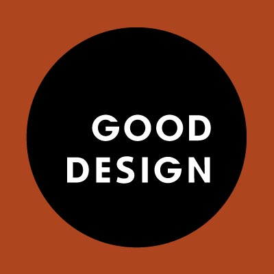
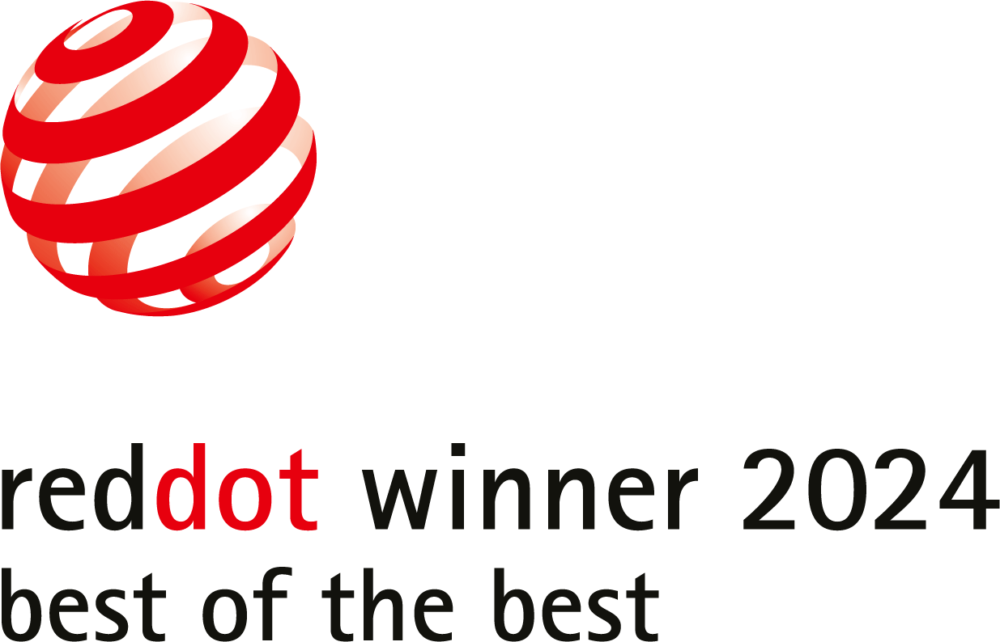
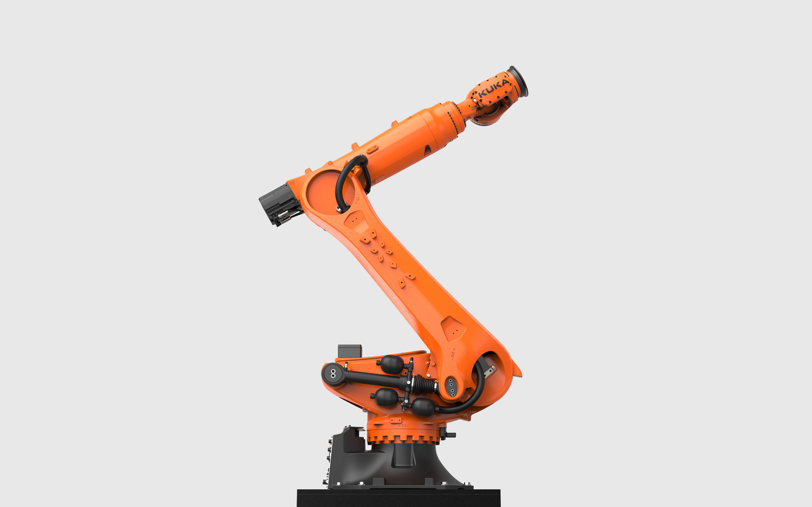
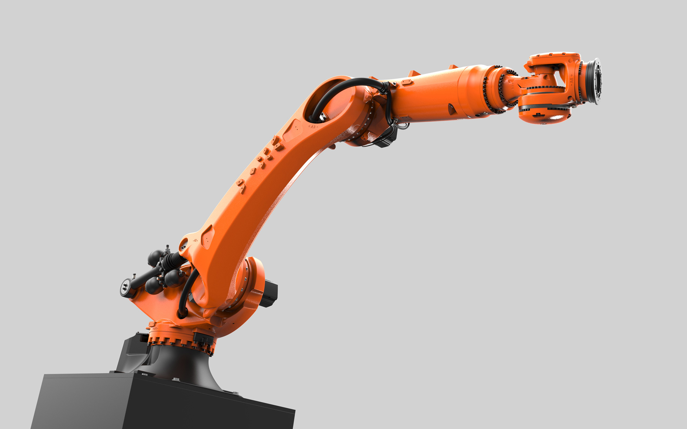
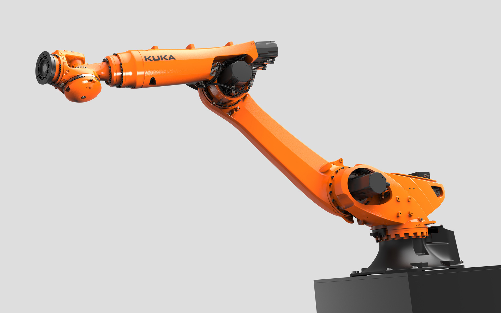
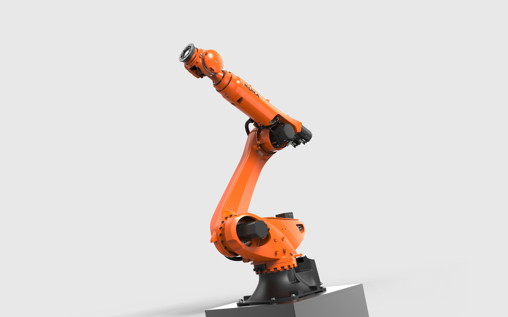

KUKA KR 500 FORTEC-2
Heavy Duty Robot
KUKA KR 500 FORTEC-2
Schwerlastroboter
The KR 500 FORTEC-2 stands for unbeatable and unbridled power in a compact design.
The heavy-duty robot KUKA KR 500 FORTEC-2 was developed for precise handling in industry and can move
workpieces with payloads of up to 500 kg with a range of up to 3400 mm.
The extremely torsion-resistant design combined with powerful drives enables precise and quick handling
of
heavy, large-format components with
high moments of inertia. The robot offers maximum performance in the smallest space and is equipped for
a
wide
range of applications, from battery handling to mega and giga casting.
Its appearance unmistakably shows the concentrated energy and performance. It looks expressive,
extremely
agile and, despite its enormous physical characteristics, radiates the light-footedness of an athlete.
Organically designed, powerful components give the KR 500 FORTEC-2 a lively appearance and show the
muscles
with which the robot achieves peak performance. Flowing shape transitions withstand the enormous flow of
force and the extreme physical dynamic properties.
Thanks to its low energy consumption, including state-of-the-art drive technology and the latest
software
and controller technology, the second life-capable industrial robot with a long service life and reduced
footprint offers a climate-friendly overall robotics package.
Der KR 500 FORTEC-2 steht für unschlagbare Power und unbändige Kraft im kompakten Design.
Neue Anwendungen in der Industrie erfordern gezielte Entwicklungen in der Robotik. Der Schwerlastroboter
KUKA KR 500 FORTEC-2 wurde für präzise Handhabungen in der Industrie entwickelt und kann Werkstücke mit
Nutzlasten von bis zu 500 kg mit einer Reichweite bis zu 3400 mm bewegen.
Das extrem verwindungssteife Design in Verbindung mit leistungsstarken Antrieben ermöglicht exaktes und
schnelles Handling schwerer, großformatiger Komponenten mit hohen Trägheitsmomenten. Der Roboter bietet
maximale Leistung auf kleinstem Raum und ist für vielseitige Anwendungen gerüstet, vom Batteriehandling
bis
hin zum Mega- und Giga-Casting.
Sein Erscheinungsbild zeigt unmissverständlich die geballte Energie und Leistungsfähigkeit. Er wirkt
unglaublich stark, extrem beweglich und strahlt trotz der enormen physischen Eigenschaften eine
Leichtfüßigkeit eines Athleten aus. Organisch gestaltete, kraftvolle Bauelemente verleihen dem KR
500 Fortec-2 ein lebendiges Erscheinungsbild und zeigen die Muskeln, mit denen der Roboter zur
Höchstleistung aufsteigt. Fließende Formübergänge halten dem enormen Kraftfluss und den extremen
physikalischen Dynamikeigenschaften stand.
Durch seinen niedrigen Energieverbrauch, inklusive modernster Antriebstechnik und neuester Software- und
Controller-Technologie, bietet der Second Life-fähige Industrieroboter mit langer Lebensdauer und
reduziertem Footprint ein klimafreundliches Robotik-Gesamtpaket.




Images © Selić Industriedesign